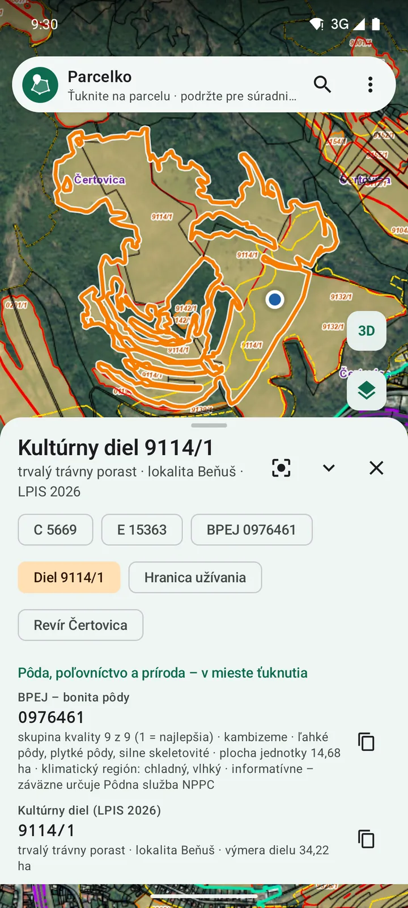
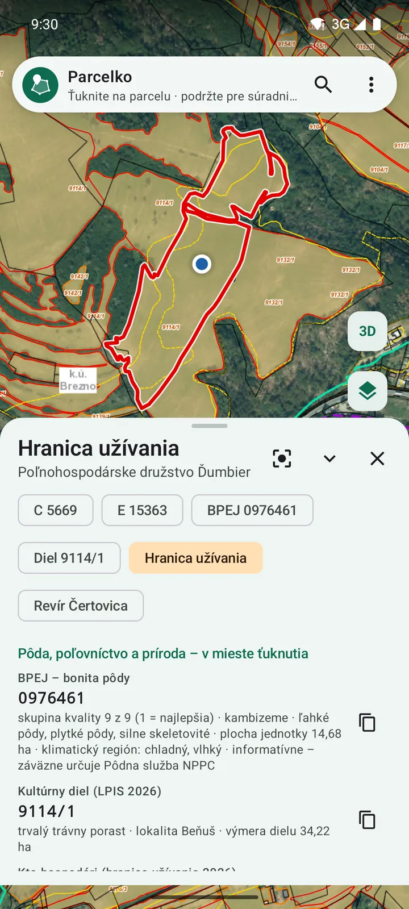
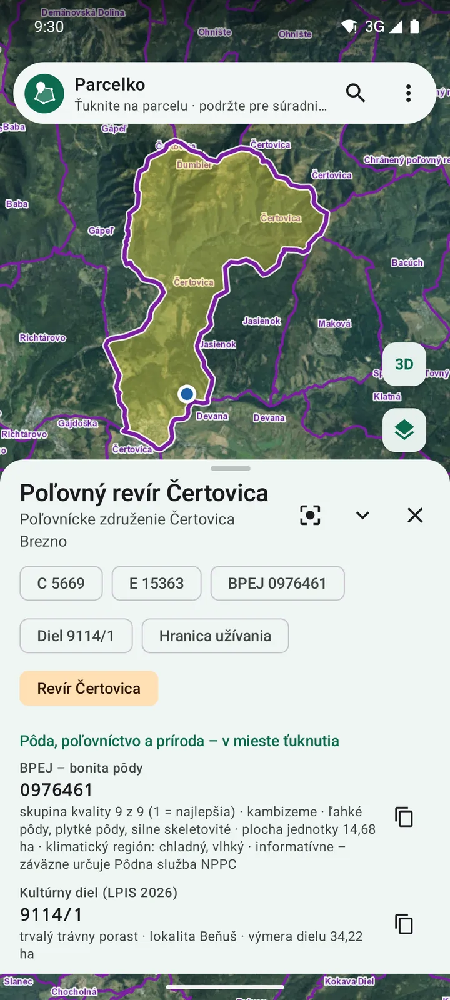
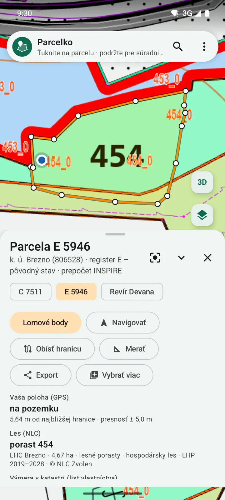
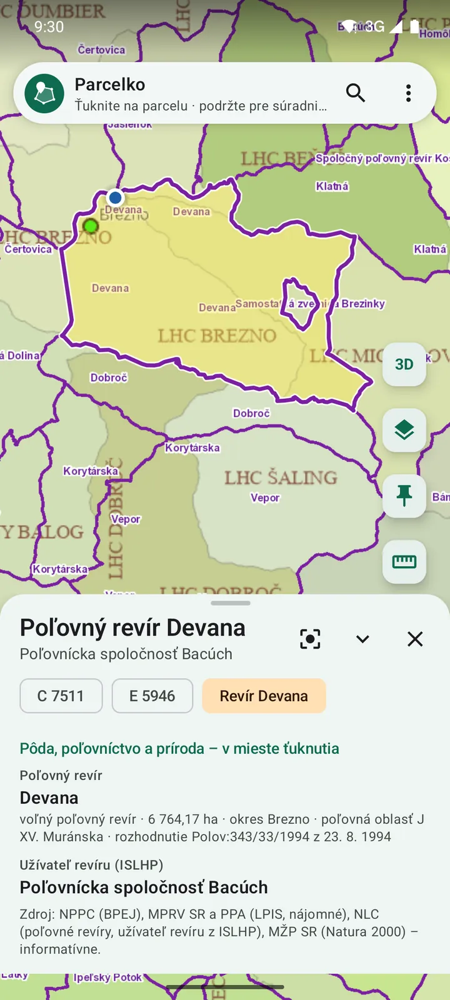
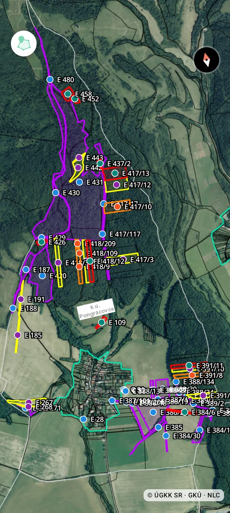

Vlastník a dedič
- Kde presne sú moje parcely – v lese, na lúke, na ornej pôde či v záhrade
- Kto na mojej pôde hospodári a komu pýtať nájom – postup
- Rozmery, výmera a vlastníci z listu vlastníctva
- Navigácia až na pozemok a prehľad všetkých pozemkov
48,8188° s. š.19,6670° v. d.Brezno – Zadné Halny
Čí je, aký je veľký a kade vedú hranice. Aká je pôda, kto na nej hospodári a komu pýtať nájom. V akom je revíri a lesnom poraste. Na mape doma aj v teréne – aj bez signálu.
Toto je živá mapa so skutočnými údajmi – ťuknite kamkoľvek a uvidíte, čo všetko o tom mieste vieme.
Parcely © ÚGKK SR (INSPIRE, CC BY 4.0) · Lesné porasty © NLC Zvolen (CC BY-SA 4.0) · porastová mapa © NLC Zvolen · Ortofoto © GKÚ Bratislava, NLC · BPEJ © NPPC (CC0) · Kultúrne diely, hranice užívania © MPRV SR, PPA (CC BY 4.0) · Poľovné revíry © NLC Zvolen (CC BY-SA 4.0) · Terén: Mapzen, SRTM, EU-DEM © Copernicus
Pre koho
Každý sa na to isté miesto pozerá inak. Parcelko má pre každého jeho vrstvy – a pri ťuknutí ukáže všetko naraz. Vyberte si, kto ste, a pozrite si to na živej mape hore.
Jedno miesto
Na tom istom mieste je parcela C aj E, bonita pôdy, kultúrny diel, užívateľ pôdy, poľovný revír či lesný porast. Parcelko ich ukáže v jednom rade – ako parcely C a E – a ťuknutím si vyberiete, čo chcete vidieť na mape. Ktoré voľby sa ukážu, určujú vrstvy, ktoré máte zapnuté. Dve skutočné miesta zo Zadných Halien pri Brezne:



Lesník vidí porasty a parcely, poľovník revíry, vlastník svoju parcelu – na tej istej mape, aj bez signálu.


Nájom
Údaje z registra pôdy LPIS (MPRV SR, PPA) sú informatívne – nájom dohadujete s užívateľom podľa zmluvy.
Nič nemerajte – ťuknite na parcelu. Dĺžky strán, výmera, obvod aj súradnice lomových bodov v S-JTSK sú hneď na displeji, ako v geometrickom pláne. Presne ich exportujete ako KMZ a KML (Google Earth), GPX (GPS prístroje), GeoJSON (GIS), DXF (CAD), CSV (Excel) či TXT – DXF, CSV a TXT aj v súradniciach S-JTSK, JTSK03, WGS84 či UTM.
Nová služba · Portfólio pozemkov na mieru
Dedíte pozemky alebo ich máte roztrúsené po viacerých katastroch? Podľa vašich požiadaviek vyhľadáme všetky vaše parcely vo vybraných katastrálnych územiach a pripravíme z nich presné portfólio pre Parcelko. Otvoríte ho v mobile a máte všetko po ruke – kde sú vaše pozemky, čo na nich je a s kým ich vlastníte.
Mnohí dedičia nevedia, kde všetky pozemky ležia a s kým ich budú vlastniť. Vyhľadáme pozemky poručiteľa (zosnulého) vo vybraných katastrálnych územiach a pripravíme ich prehľad – každú parcelu na mape aj v súhrne s výmerami a podielmi. Je to prehľadný podklad pre dohodu dedičov aj pre rozhovor s notárom.
Pri licencii na mesiac, polrok alebo rok je príprava portfólia v cene licencie – bez príplatku.
Ako to prebieha

Súhrn portfólia ukážka
| Druh pozemku | Parciel | Výmera na váš podiel |
|---|---|---|
| Orná pôda | 12 | 3,42 ha |
| Trvalý trávny porast | 9 | 2,18 ha |
| Lesný pozemok | 16 | 6,05 ha |
Parcela E 1204: podiel 1/6 (16,67 %), na vás 1 120 m², ďalších 5 spoluvlastníkov.
Údaje v tabuľke sú vymyslené.
Funkcie
S Parcelkom máte svoje pozemky vždy pri sebe – presne podľa katastra: katastrálna mapa a parcely registra C aj E, hľadanie parcely podľa čísla a katastrálneho územia, vlastníci z listu vlastníctva (výpis z LV), rozmery a výmera pozemku, súradnice v S-JTSK, lesné porasty a porastová mapa NLC a offline mapy bez signálu – pre vlastníkov pozemkov, dedičov, lesníkov, urbariáty aj realitných maklérov.
Ťuknutím do mapy alebo podľa katastrálneho územia a čísla – registra C aj E. Parcela sa ukáže celá s výmerou a hranicami.
Vaša poloha z GPS priamo na mape: aplikácia povie, či stojíte na pozemku, ako ďaleko je hranica a s akou presnosťou.
Parcely C aj E, lesné porasty a vaše vlastné vrstvy presne na sebe – a pri parcele vlastníci z uloženého výpisu LV.
Farebná porastová mapa s číslami porastov a hranice porastov spolu s parcelami C a E – v lese hneď viete, kde ste a na ktorej parcele stojíte.
Ortofoto, katastrálna mapa, mapa určeného operátu, základná mapa ZBGIS, tieňovaný reliéf a porastová mapa – prepnete jedným ťuknutím.
Mapa cez celý displej bez ponúk, naklonený pohľad a mapa sa otvorí tam, kde ste skončili.
Na mieste ťuknutia sa v rade ukážu voľby ako pri parcelách C a E – BPEJ, kultúrny diel, hranica užívania, krajinný prvok, poľovný revír. Ťuknutím vyberiete, čo sa zvýrazní na mape; ktoré sa ukážu, určujú zapnuté vrstvy.
Kód BPEJ, skupina kvality 1 – 9, pôdny typ, hĺbka, zrnitosť a klimatický región v mieste ťuknutia. Hranice jednotiek na mape s kódmi, ktoré rastú s priblížením.
Diely z registra pôdy LPIS so zlatou výplňou ako v ZBGIS – priehľadnosť si nastavíte. Kód dielu, kultúra a výmera; medze, priekopy a stromoradia vynechané z výmery.
Hranica užívania ukáže, kto na pozemku hospodári – družstvo, firma či súkromný hospodár, s IČO a plodinou – a celý blok, ktorý obhospodaruje. K tomu obvyklá výška nájomného v katastrálnom území.
Hranice a názvy revírov, zverníc a nepoľovných plôch. Po ťuknutí užívateľ revíru, obdobie užívania, rozhodnutie o uznaní, okres a poľovná oblasť – vybraný revír so žltou výplňou.
Územia európskeho významu a chránené vtáčie územia na mape – a po ťuknutí, či pozemok leží v niektorom z nich.
Ťuknite na Navigovať – čiara na mape, vzdialenosť a smer podľa kompasu vás dovedú k parcele alebo k bodu, aj v lese bez signálu. Keď stojíte na pozemku, mobil zavibruje.
Kým je navigácia zapnutá, Parcelko stráži hranicu: keď z pozemku vyjdete, mobil zavibruje a ukáže, kam sa vrátiť. Pri ťažbe dreva či kosení ľahšie zostanete na svojom.
Od lomového bodu k bodu dookola celej parcely – číslo bodu, vzdialenosť a smer; pri každom bode mobil zavibruje. Na hľadanie hraničníkov či prechod pozemku pred kúpou. Orientačne podľa GPS, nie je to vytýčenie.
Zadajte alebo vložte súradnice v S-JTSK, JTSK03, WGS84 či UTM – aj celý zoznam bodov z geometrického plánu či vytyčovacieho náčrtu. Parcelko ich ukáže na mape, dovedie vás k nim bod po bode a uloží ich ako vrstvu.
Nemusíte nič merať: ťuknete na parcelu a hneď máte dĺžku každej strany medzi lomovými bodmi, výmeru, obvod aj súradnice bodov v S-JTSK. Výmera v rovine S-JTSK sa počíta ako v katastri – napr. 3 565,38 m² pri výmere 3 565 m² na LV.
Ťukajte do mapy: dĺžka trasy alebo obsah a obvod plochy sa počítajú hneď. Bod chytíte a posuniete – obsah, obvod aj dĺžky strán sa okamžite prepočítajú. Body vložíte, zmažete, kroky vrátite späť a zámkom ich chránite pred náhodným posunom.
Obídete pozemok a aplikácia sama zaznamenáva body z GPS – priebežne počíta prejdenú dĺžku, obvod aj obsah. Meranie môžete pozastaviť.
Bod zapíšete priamo z polohy, presnejšie s priemerovaním. Externý GPS prijímač (napr. RTK) pripojíte cez simulovanú polohu Androidu.
Podržte prst na mape a uvidíte súradnice miesta v S-JTSK, JTSK03, WGS84 a UTM aj nadmorskú výšku (Bpv). Pri parcele zoznam všetkých lomových bodov – v S-JTSK, JTSK03, WGS84 alebo UTM, aj na skopírovanie naraz.
Ťuknutím alebo rámikom vyberiete viac parciel naraz – aplikácia spočíta ich celkovú výmeru.
Zlúčené parcely, merania a body si uložíte do vlastných vrstiev s menom, farbou a výplňou – napr. „Moje lesy“, „Urbár“, „Na predaj“.
Načítate parcely a body z Google Earth, GPS prístrojov či iných aplikácií (KMZ, KML, GPX) – aj viac súborov naraz, so štýlmi.
Číslované body s poznámkou a fotkami s polohou – hraničníky, poškodenia, stromy na ťažbu. Každá fotka dostane odtlačok SHA-256 – podľa neho sa dá overiť, či sa súbor od zaznamenania nezmenil (najlepšie, keď odtlačok hneď pošlete napr. e-mailom).
Výpis otvoríte na oficiálnom portáli katastra priamo v aplikácii a Parcelko si ho prečíta samo – ako stránku aj PDF. Raz uložený je pri parcele vždy – vlastníci, podiely a ťarchy jedným ťuknutím.
Mapa v mierke na A4 alebo A3 – s hranicami parcely, dĺžkami strán, legendou, šípkou na sever a grafickou mierkou. Na tlač aj e-mail: pre maklérov, dedičov či rokovanie so susedom. Informatívne, nie geometrický plán.
Rámikom si vyznačíte ľubovoľný výsek mapy – od pár parciel po celý chotár, les či obec – a stiahnete ho s vrstvami, ktoré chcete: mapy, parcely, lesné mapy, BPEJ, kultúrne diely, hranice užívania aj poľovné revíry. Území môžete mať, koľko potrebujete; v teréne bez signálu potom vidíte hranice, čísla parciel aj svoju polohu a navigácia funguje ďalej.
V stiahnutom území si vyberiete: mapa z mobilu, alebo aktuálna z internetu, keď je signál. Vždy vidíte, odkiaľ mapa je a kedy bolo územie stiahnuté – staršie územie aktualizujete jedným ťuknutím.
Stiahnuté územie pošlete kolegovi jedným súborom – bez nového sťahovania. Kolega potrebuje vlastnú licenciu.
KMZ (aj s fotkami), KML, GPX a GeoJSON vo WGS84 (ako to vyžaduje formát), DXF pre CAD, CSV pre Excel a TXT – v S-JTSK, JTSK03, WGS84 alebo UTM.
Les, ťažba a poľovníctvo
V lesoch je veľa parciel registra E, ktorých vlastníci sú iní než vlastník okolitého lesa. Parcelko ukáže naraz hranice lesných porastov NLC, parcely C aj E a vašu polohu z GPS. Pri ťažbe tak hneď vidíte, či porast, v ktorom pracujete, nezasahuje do cudzej parcely – a vlastníka si overíte z listu vlastníctva.
Orientačne podľa údajov katastra a NLC – hranice v teréne vytyčuje geodet.

Rozdiel na prvý pohľad
Vľavo samotná porastová mapa NLC, ako ju poznáte. Vpravo to isté miesto v Parcelku so zapnutými parcelami registra C (čierne), registra E (zelené) a hranicami porastov – hneď vidíte, koľko pozemkov a vlastníkov je v lese a pri obci. Potiahnite posúvač.
Brezno – Zadné Halny, skutočné obrazovky aplikácie.

 len lesná mapa+ parcely C a E
len lesná mapa+ parcely C a E
V mobile
Skutočné obrazovky aplikácie – Brezno, Zadné Halny. Ukážky sa posúvajú samy, môžete ich posúvať aj vy.


List vlastníctva
Z panelu parcely otvoríte oficiálny katastrálny portál ÚGKK s predvyplneným územím a číslom parcely. Výpis z listu vlastníctva stačí na portáli zobraziť – Parcelko si ho prečíta samo, nič netreba sťahovať ani prepisovať. Na portáli len potvrdíte „Nie som robot“ – výpis je bezplatný. Výpis v PDF (napr. od notára) alebo uloženú stránku načítate aj zo súboru.
Raz uložený výpis sa pri parcele zobrazí automaticky so všetkými údajmi: vlastníci, podiely a ťarchy sú hneď k dispozícii jedným ťuknutím na parcelu – aj offline. Ak je výpis starší ako pol roka, aplikácia vás upozorní.
Výpisy ostávajú len vo vašom mobile. Údaje katastra majú informatívny charakter.
LV č. 1234 · k. ú. Ukážkovo ilustrácia
Parcela C 512/3 · záhrada · 812 m²
Výpis načítaný 31. 10. 2026 · ťarchy: bez zápisu
Presnosť
Súradnice lomových bodov sa prevádzajú oficiálnym postupom ÚGKK – 7-parametrová transformácia ETRS89 ⇄ JTSK03 a opravná sieť JTSK03 ⇄ JTSK. Prevod je overený voči serveru katastra na 12 miestach Slovenska s odchýlkou najviac 6 milimetrov (0,006 m). Presnosť polohy z GPS mobilu je iná vec – spravidla 2 – 10 m. Výmera sa počíta v rovine S-JTSK rovnako ako v katastri, plocha na elipsoide je uvedená samostatne.
Parcelko nie je oficiálnou aplikáciou ÚGKK SR ani GKÚ. Údaje katastra majú informatívny charakter (§ 68 ods. 4 zákona č. 162/1995 Z. z.) a aplikácia nie je určená na vytyčovanie hraníc – to robí oprávnený geodet.
Cenník
Licencia pre jeden mobil, bez automatického predlžovania. Platí odo dňa vydania. Ceny sú konečné.
4,90 €
7 dní
Nájdete svoju parcelu v lese či na lúke, prezriete pozemok pred kúpou.
9,90 €
30 dní
Portfólio pozemkov na mieru v cene
Na projekt, predaj nehnuteľnosti alebo kratšie práce v teréne.
34,90 €
182 dní · 5,82 € mesačne
Portfólio pozemkov na mieru v cene
Celá sezóna ťažby alebo poľnohospodárskych prác.
49,90 €
365 dní · 4,16 € mesačne
Portfólio pozemkov na mieru v cene
Pre lesníkov, urbariáty, maklérov a všetkých, ktorí sú v teréne často.
Firmy, urbariáty a spoločenstvá: od 3 mobilov zľava 20 %, faktúra – napíšte nám.
Chcete Parcelko najprv vyskúšať? Pošleme skúšobnú licenciu, ktorá platí do nasledujúceho dňa – napíšte nám.
Ako začať
Vždy najnovšia verzia (súbor Parcelko.apk, približne 58 MB). Nové verzie aplikácia oznámi sama. iPhone zatiaľ nepodporujeme.
Prehliadač pri sťahovaní upozorní, že „súbor môže byť škodlivý“ – ukáže to pri každej aplikácii mimo Google Play, nie je to nález v Parcelku. Potvrďte Stiahnuť, potom povoľte inštaláciu z prehliadača a ak sa ozve Play Protect, inštaláciu potvrďte.
Pojmy
Otázky
Ťuknite na parcelu a zvoľte „Zistiť vlastníkov“ – otvorí sa oficiálny katastrálny portál ÚGKK s predvyplneným katastrálnym územím a číslom parcely. Výpis z listu vlastníctva (LV) stačí na portáli zobraziť – Parcelko si ho prečíta samo a uloží; odvtedy sú vlastníci, podiely a ťarchy pri parcele jedným ťuknutím.
Zapnite vrstvu Hranice užívania a ťuknite na svoju parcelu – Parcelko ukáže, kto na nej hospodári (družstvo, firma alebo súkromný hospodár) s IČO a plodinou, a obvyklú výšku nájomného v katastrálnom území. Ak pôdu ten, kto na nej hospodári, prenajal alebo vymenil ďalej, povie vám, od koho ju má – a od toho žiadate nájom. Údaje sú z registra pôdy LPIS (MPRV SR, PPA) a sú informatívne.
BPEJ (bonitovaná pôdno-ekologická jednotka) je sedemmiestny kód kvality poľnohospodárskej pôdy – klimatický región, pôdny typ, sklon, hĺbka a zrnitosť. Parcelko ukáže kód aj skupinu kvality od 1 (najlepšia) po 9 v mieste ťuknutia. Hodí sa pri kúpe, predaji, nájme aj dedení pozemku; údaje NPPC sú informatívne, záväzne ich určuje Pôdna služba.
Áno. Po zapnutí vrstvy Poľovné revíry vidíte na mape hranice a názvy revírov, zverníc a nepoľovných plôch. Po ťuknutí Parcelko ukáže užívateľa revíru (poľovnícke združenie), obdobie užívania, rozhodnutie o uznaní, okres a poľovnú oblasť; vybraný revír sa vyplní žltou. Hranice máte aj v teréne bez signálu, ak si územie stiahnete.
Ťuknite kamkoľvek alebo sa postavte na miesto v teréne – Parcelko ukáže v jednom rade parcelu C aj E, a pri zapnutých vrstvách aj BPEJ, kultúrny diel, hranicu užívania, krajinný prvok, poľovný revír a lesný porast. Ťuknutím vyberiete, čo sa zvýrazní na mape; pri parcele máte rozmery, výmeru a vlastníkov, pri ostatných ich údaje.
Áno – službou Portfólio pozemkov na mieru. Podľa vašich požiadaviek vyhľadáme všetky vaše parcely vo vybraných katastrálnych územiach (register C aj E), farebne ich rozlíšime podľa druhu pozemku alebo vašich kritérií a pri každej uvedieme váš podiel zlomkom aj v percentách, výmeru, ktorá naň pripadá, a spoluvlastníkov. Portfólio otvoríte v Parcelku v mobile, súhrn dostanete aj ako tabuľku (Excel, PDF). Pri licencii na mesiac, polrok alebo rok je príprava portfólia v cene licencie.
V hľadaní zadajte katastrálne územie, register (C alebo E) a číslo parcely – parcely E aj s predčíslím, napr. 5-384. Parcela sa ukáže na mape celá, s výmerou a hranicami, a tlačidlom Navigovať vás aplikácia dovedie až na pozemok – ukáže vzdialenosť a smer a povie, kedy už stojíte na svojom.
Na mape vidíte parcelu aj svoju polohu z GPS. Aplikácia ukáže, či stojíte na pozemku, a vzdialenosť k najbližšej hranici. Funguje to aj v lese a na lúke, a so stiahnutou offline mapou aj bez signálu. Presné vytýčenie hraníc robí geodet.
Výmeru parcely z katastra uvidíte ťuknutím na ňu – spolu s dĺžkami strán, obvodom a súradnicami lomových bodov. Vlastnú plochu zmeriate ťukaním do mapy, bodmi z GPS alebo chôdzou okolo pozemku; obsah, obvod aj dĺžky sa počítajú priebežne.
Register C sú súčasné parcely katastrálnej mapy. Register E sú pôvodné parcely podľa pozemkovej knihy (mapa určeného operátu). Na poliach, lúkach a v lesoch sú vlastníci často zapísaní práve na parcelách E, hoci v teréne je to jedna veľká parcela C. Parcelko ukáže oba registre naraz.
Ukazuje dĺžky strán medzi lomovými bodmi, výmeru, obvod a súradnice bodov v S-JTSK podľa katastrálnej mapy – v rovnakej podobe ako geometrický plán. Geometrický plán na právne úkony však vyhotovuje autorizovaný geodet.
Áno. Porastová mapa NLC a hranice lesných porastov s číslami porastov sa zobrazia spolu s parcelami C a E, takže pri ťažbe vidíte, či porast nezasahuje do cudzích parciel. Užitočné pre lesníkov, urbariáty a pozemkové spoločenstvá.
Áno. V Exporte alebo v ponuke zvoľte Obrázok / PDF mapy, vyberte papier A4 alebo A3, orientáciu a mierku (1 : 500 až 1 : 10 000) a posuňte mapu do rámika. Parcelko pripraví PDF alebo obrázok s hranicami parcely, dĺžkami strán, legendou, šípkou na sever a grafickou mierkou. Pri tlači nastavte skutočnú veľkosť (100 %). Je to informatívny výstup, nie geometrický plán.
Áno. V ponuke zvoľte Zadať súradnice a zadajte alebo vložte súradnice v S-JTSK, JTSK03, WGS84 či UTM – aj celý zoznam bodov z geometrického plánu (číslo bodu, Y a X na riadok). Parcelko body ukáže na mape, navigáciou vás k nim dovedie bod po bode a uloží ich ako vrstvu. Poloha je z GPS mobilu (spravidla 2 – 10 m), takže ide o orientačné hľadanie, nie o vytýčenie – to robí geodet.
Áno. Počas navigácie k parcele Parcelko ukáže, kedy stojíte na pozemku, a keď z neho vyjdete, mobil zavibruje a aplikácia ukáže, kam sa vrátiť – napríklad pri ťažbe dreva či kosení. Funguje, kým máte Parcelko otvorené na obrazovke (počas navigácie displej nezhasne).
Formáty KMZ a KML (Google Earth), GPX (GPS prístroje) a GeoJSON (GIS) – tie sú vždy vo WGS84, ako to vyžaduje formát – a DXF (CAD), CSV (Excel) a TXT so súradnicami v S-JTSK (JTSK), JTSK03, WGS84 alebo UTM 34N.
Áno. Vyznačte územie a stiahnite si mapy aj parcely vopred – v lese bez signálu potom vidíte hranice, čísla parciel, výmery aj svoju polohu. Bez internetu nefunguje len aktivácia licencie, hľadanie parcely podľa čísla a portál katastra; uložené výpisy LV máte aj offline.
Súradnice lomových bodov zodpovedajú katastrálnej mape – prevod súradníc je overený s odchýlkou najviac 6 milimetrov (0,006 m) a výmera sa počíta rovnako ako v katastri. Presnosť samotnej katastrálnej mapy závisí od územia – pri nečíselných mapách a parcelách E môžu byť hranice od skutočnosti posunuté o decimetre až metre. Presnosť polohy z GPS mobilu je spravidla 2 – 10 m. Na vytýčenie hraníc v teréne potrebujete geodeta.
Nie. Parcelko vyvíja slovenská firma LUBERIT s. r. o.
Licencia je viazaná na jeden mobil. Pri výmene nám pošlite nový kód zariadenia a pošleme nový aktivačný odkaz. Vrstvy a merania si prenesiete exportom (KMZ), stiahnuté územie tlačidlom „Poslať“ – rovnako ho pošlete aj kolegovi. Kolega potrebuje vlastnú licenciu.
Údaje, ktoré v aplikácii vytvoríte – parcely, merania, fotky, výpisy z LV – sú len vo vašom mobile; aplikácia ich nikam neposiela. Evidujeme len údaje potrebné na licenciu (meno, kód zariadenia, platnosť) a pri službe Portfólio pozemkov na mieru podklady na jeho prípravu. Podrobnosti v zásadách ochrany osobných údajov.
Kontakt
Napíšte nám – pošleme licenciu, faktúru pre firmu či urbariát, alebo poradíme s parcelou. Odpovedáme spravidla do 24 hodín.
Kód zariadenia ukáže aplikácia po spustení (alebo v ponuke O aplikácii) – stačí ho skopírovať do správy.